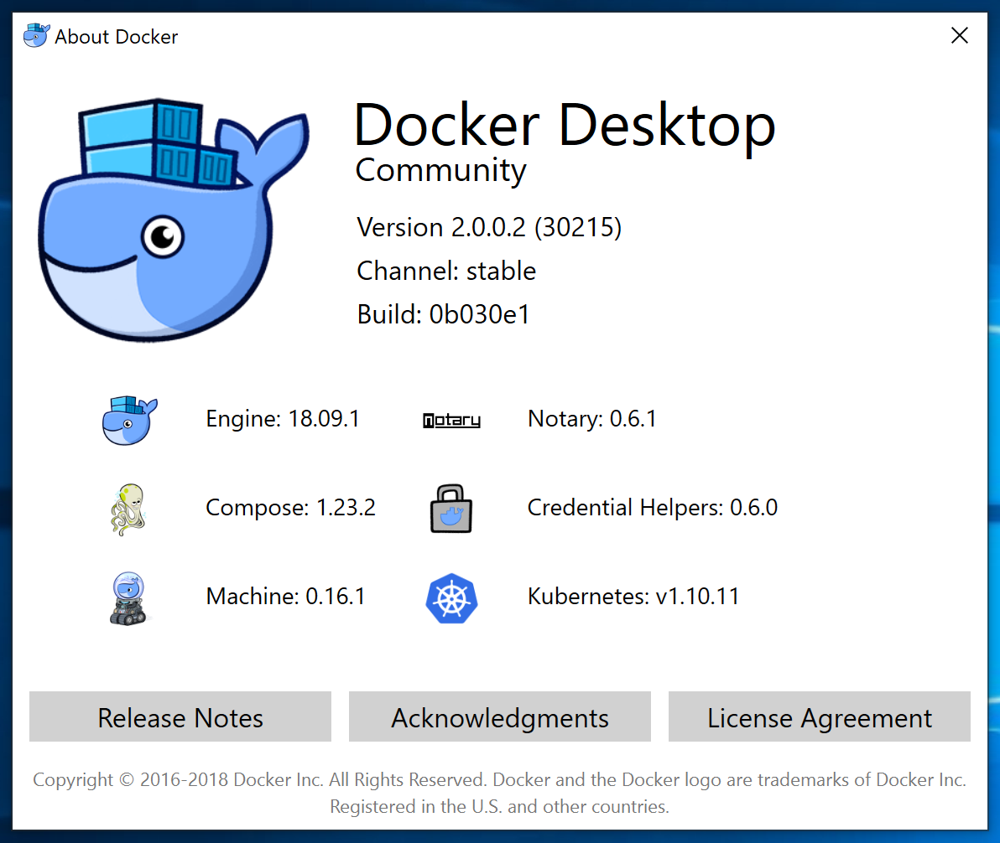
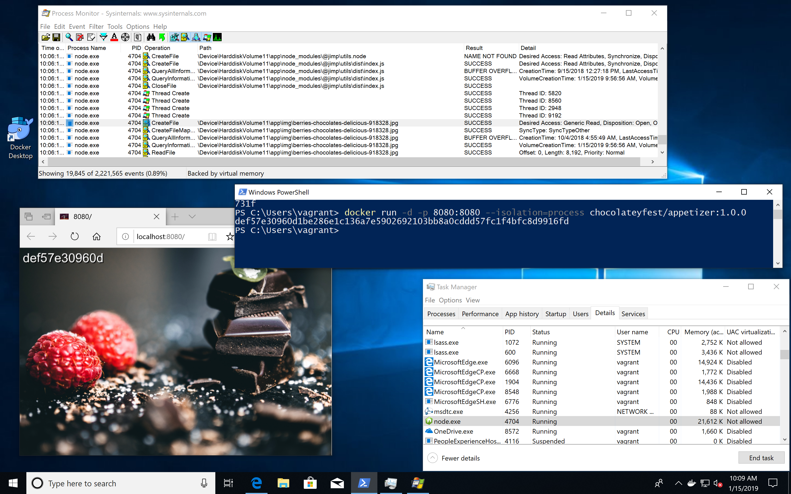
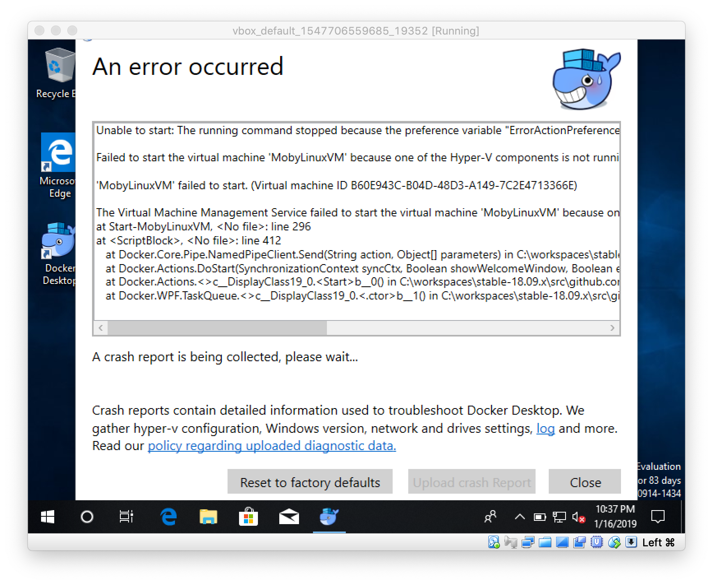
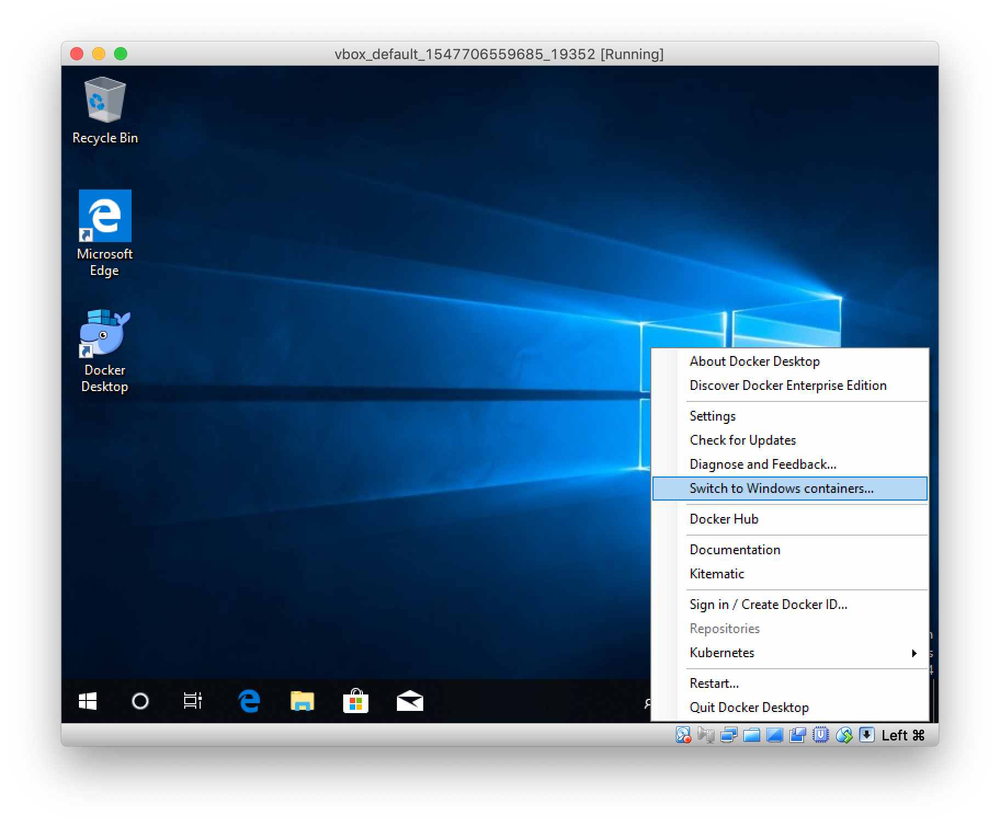
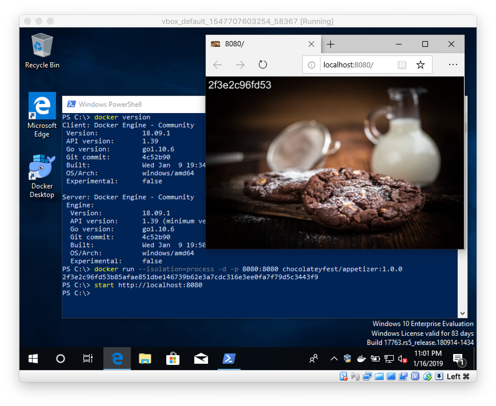

When you follow my blog for a while you probably know that running Windows Containers on Windows 10 had some disadvantages compared to a Windows Server. On Windows 10 every Windows Containers has to be run in Hyper-V isolation mode.
Process Isolation
With the latest release of Docker Desktop on Windows 10 1809 you now can run Windows Containers in process isolation mode. What's the benefit you might think.

In the past process isolation was only possible with Windows Server. The Windows 10 operating system uses the same kernel, but with different settings. With this pull request https://github.com/moby/moby/pull/38000 that got merged into Docker 18.09.1 it is now possible to use it on Windows 10 as well.
- You can start more Windows Containers on your machine as they consume less resources
- Containers normally start faster than in hyperv isolation mode
- You can "see" the isolated processes and what they are doing
Visible container processes
Especially for developers this is a great enhancement, because you now can use tools like Task Manager, Process Monitor and others to inspect your container processes from the host. I've blogged How to find dependencies of containerized Windows apps about a year ago. Now you do not longer need to spin up a Windows Server VM to do that, your Windows 10 machine is all you need.
Let's try this out with a small web server I have created for the Chocolatey Fest conference last October that's running in a Windows Nanoserver 2019 container.
Open up a PowerShell terminal and start a Windows container with this command
docker run -d -p 8080:8080 --isolation=process chocolateyfest/appetizer:1.0.0
The command will pull the Docker image from Docker Hub, starts the web server as a container and forwards port 8080 to it.
Now you can access the web server with your browser or by typing this command
start http://localhost:8080
The web server should show you a sweet photo and the name of the container stamped on it.

As you can see in the screen shot you can see the node.exe process in the Task Manager. If you have the Sysinternals Process Monitor installed you also can see what the containerized process is doing. This is great when you create an own Docker image from your or a 3rd-party app and something doesn't work as expected or the exe file just doesn't want to start inside the container.
Windows image version must match kernel version
The only caveat using the process isolation mode is that the Windows base image that is used for a Docker image must match the kernel of your Windows 10 machine.
I've tried process isolation on a Windows Insider 18xxx machine, but here you are out of luck and you have to run the 1809 images in default Hyper-V isolation mode.
Can I run Windows Containers in VirtualBox?
I run all these tests in VMware Fusion on my Mac, spinning up a Windows 10 1809 VM with Vagrant. You can try it yourself with the given Vagrantfile in the repo.
For a full Docker Desktop experience you need VMware Fusion as it provides nested virtualization. This is needed to activate Hyper-V in the Windows 10 VM. Docker Desktop runs fine in that VMware VM and you can try out Linux and Windows containers in it.
From time to time I get asked if people can also use VirtualBox. In the past I had to say "no" you can't use a Windows 10 VM and then run Windows Containers in it. But with process isolation there is a first breakthrough.
Danger zone for early adopters
I've tried that with VirtualBox to see what happens. The installation of Docker Desktop works without a problem. When you start Docker Desktop for the first time the following error will appear

Sure, Hyper-V does not work in a VirtualBox VM, that's why the MobyLinuxVM could not be started. But now you can switch to Windows containers in the context menu.

After a few seconds the Windows Docker engine is up and running. Open a PowerShell terminal and run the appetizer app as described above.

Voila! It works.
Try something different with an interactive nanoserver container with a CMD shell
docker run -it --isolation=process mcr.microsoft.com/windows/nanoserver:1809 cmd
TL/DR
Beginning with Windows 10 1809 and Docker 18.09.1 you can use the more lightweight process isolation mode for Windows Containers. Linux Containers still need Hyper-V installed to run them in Docker Desktop.
If you liked this blog post please share it with your friends. You can follow me on Twitter @stefscherer.